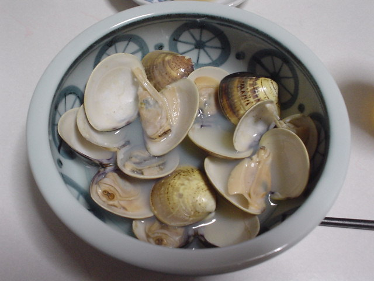

前の写真
2003-09-08
次の写真
はまぐりの酒蒸し

撮影日時: 2003-09-08 19:41:03
料理酒を切らしていたので焼酎でやったが、あまり違和感は無い。
砂抜きが必要だったようで、ちょいとザラザラな感じ…。
前の写真
2003-09-08
次の写真
高久雅生 (Takaku Masao)
http://nile.ulis.ac.jp/~masao/
,
masao@ulis.ac.jp